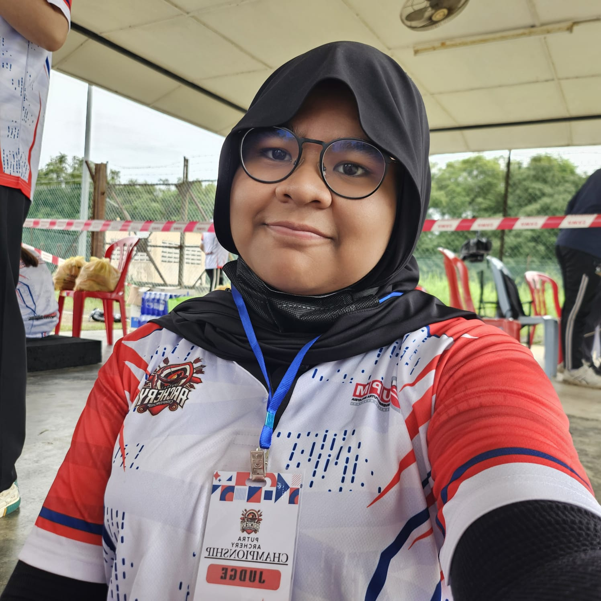

About Me

I’m a software engineering student who’s totally in love with solving problems...., building cool things, and occasionally yelling at code until it listens. My brain runs on curiosity, creativity, and probably too much caffeine..
When I’m not elbow-deep in a project or tinkering with ideas, I’m likely drawing something wild, trying new art styles, or just vibin' with my cat Gizmo.
In the future, I’m looking forward to working on impactful projects and pushing the boundaries of what I can do as a software engineer. Or jus make games. Whatever happens, I'm ready to make my mark in the tech world.
About Mary
| Category | Details |
|---|---|
| Full Name | Maryam Rizkha Rahmanisa |
| Field of Study | Software Engineering |
| Hobbies | Drawing, gaming, Anything related to art really |
| Favorite Drink | My favorite drink is matcha! Might taste like dirt for some people, but I really like it. |
| Languages | English, Indonesian, learning Chinese, almost-forgotten Japanese |